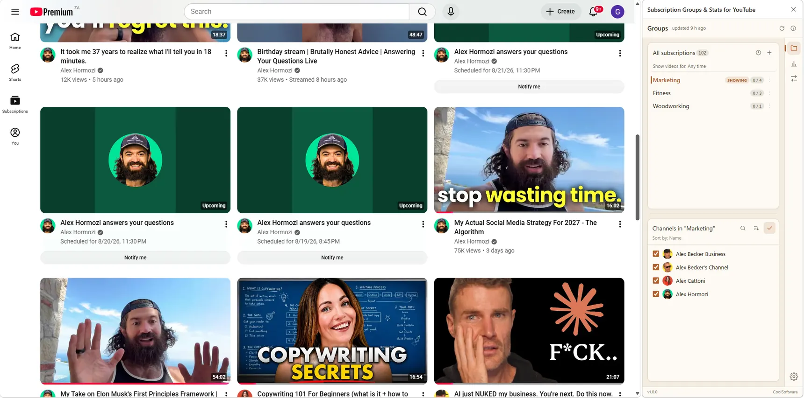
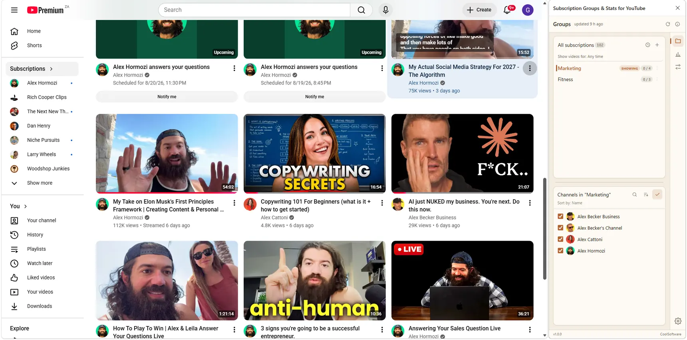
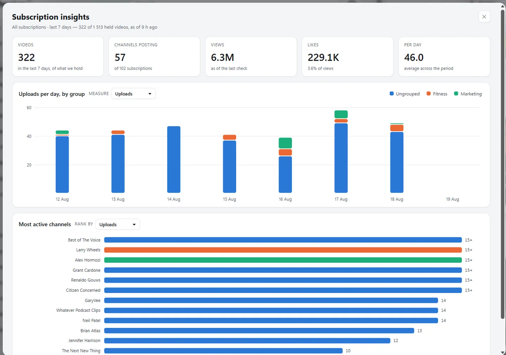
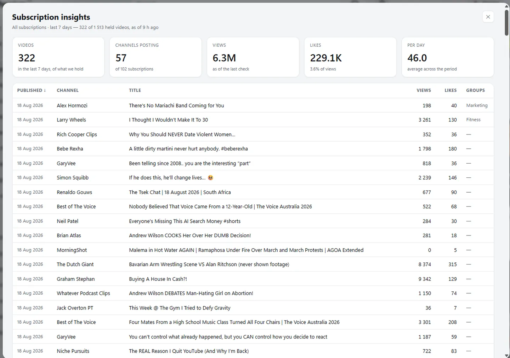

No account, no server
Your groups live in this browser, in the extension's own storage. There is no sign-up and no sync — nothing is sent anywhere, and nobody but you can read them.
Your subscriptions, on your terms
Sort your subscriptions into groups, show one group at a time in your feed, and see who is actually filling it. No account, no sync, nothing leaves your device.

A minute, start to finish — grouping your subscriptions, filtering the feed, and reading the charts.
All walkthroughs on YouTube →The subscription feed stopped being a feed of things you chose the moment one channel started posting fifteen times a week. Grouping puts the choosing back in your hands — without unsubscribing from anyone.
Four steps. The first two are the only ones that matter.
Click the extension icon in the toolbar. The panel opens beside YouTube and stays open while you browse, so you can file channels as you go.
This reads your subscription list, then each channel's public feed for its recent uploads. The second part takes a minute the first time and powers the new-upload dots, the sorting, the charts and the export.
Use + in the toolbar to name a group, then tick channels in the list below it. A channel can belong to several groups.
The eye beside a group shows only that group in your subscription feed, and takes you there. Press it again — or the eye on All subscriptions — to go back to everything.
Six things, and nothing else.
The three screens you will spend your time in.
Press the eye beside a group and your Subscriptions page shows only those channels. It is the same YouTube page, rendered by YouTube — the extension only decides what stays on it.

Uploads per day stacked by group, and your most active channels ranked. The channel posting fifteen times a week stops being a feeling and starts being a bar.

Date, channel, title, views, likes and groups — sort by any of them, filter to a group or a period, then send the whole thing to CSV.

Worth knowing before they surprise you. None of them are bugs.
The five things that actually go wrong.
The short version: there is nowhere for your data to go.
Your groups live in this browser, in the extension's own storage. There is no sign-up and no sync — nothing is sent anywhere, and nobody but you can read them.
It reads your subscription list the same way the YouTube page you are already signed into does, using your existing session. Upload dates come from each channel's public feed, which needs no sign-in at all.
It can see and change data on youtube.com — that is what
filtering the feed means — and nothing else. Export your grouping to a JSON
file at any time from Settings → Backup.
Open the panel, press Refresh, and make your first group.